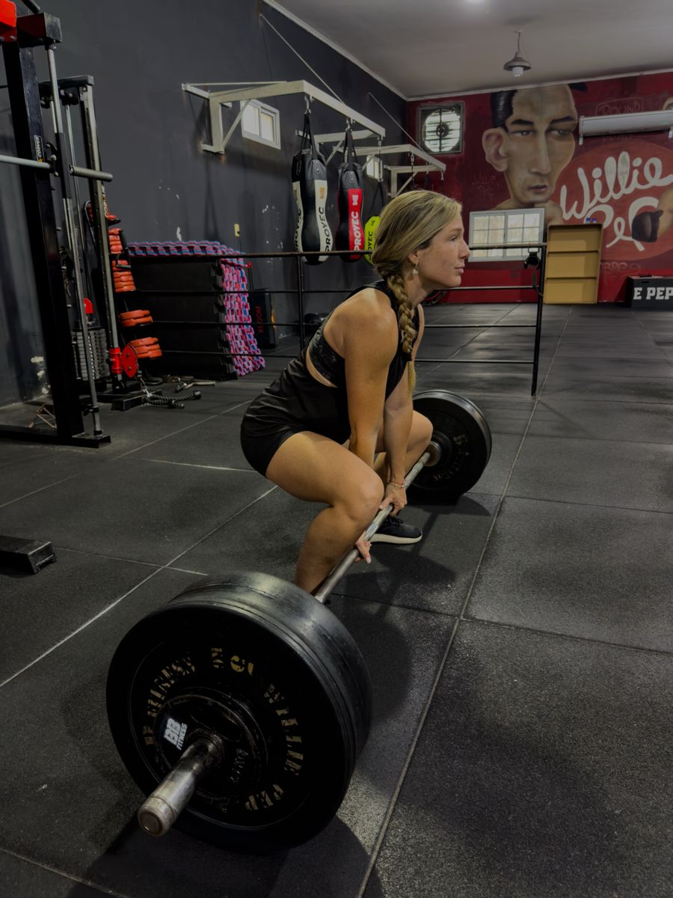
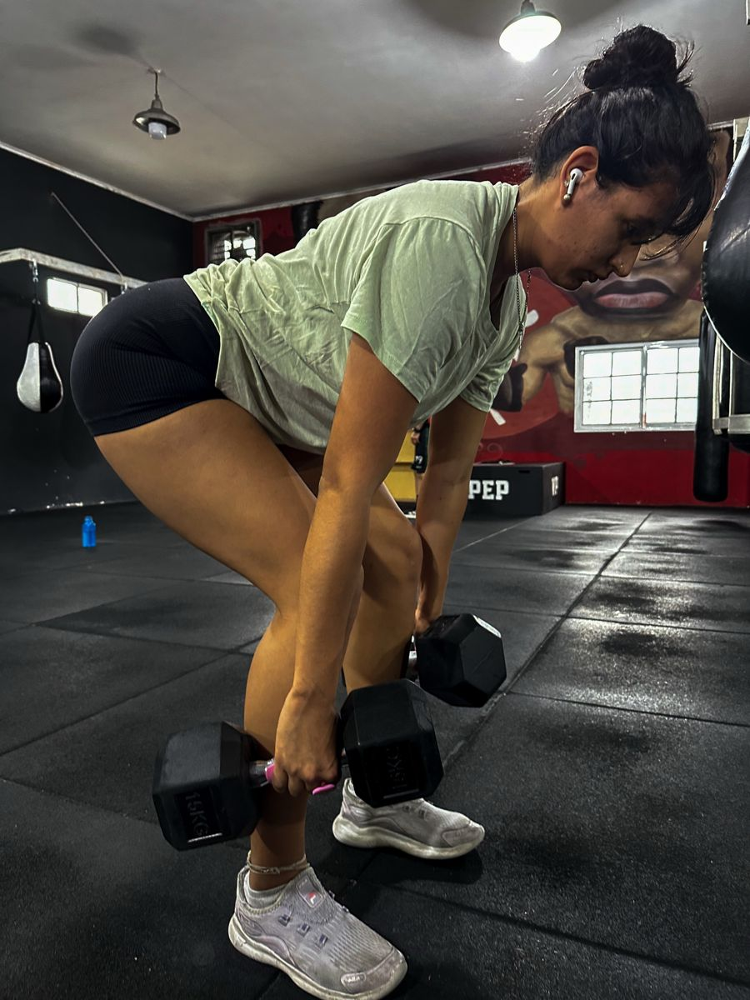
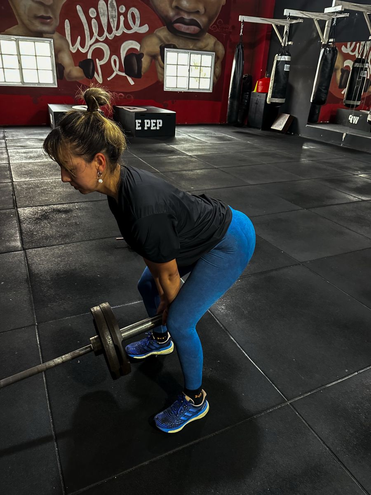
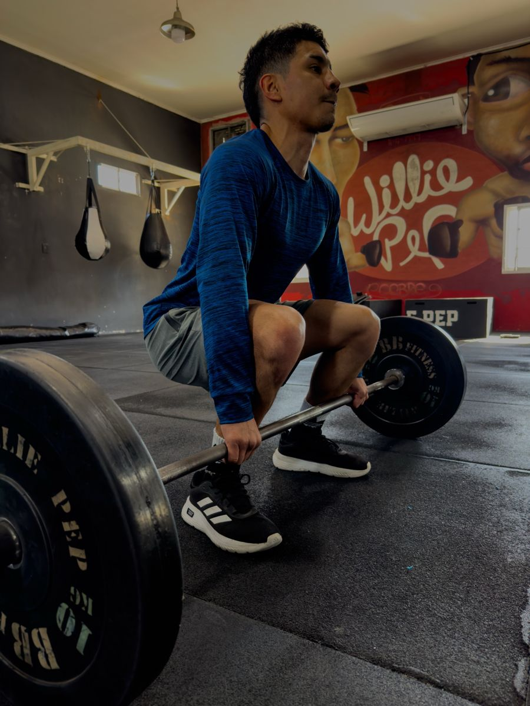
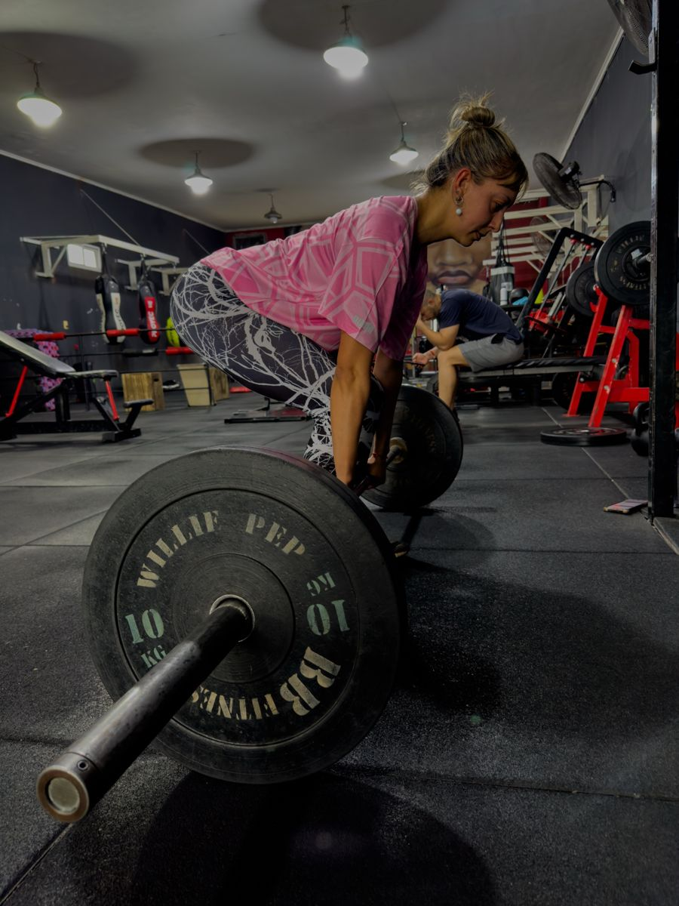
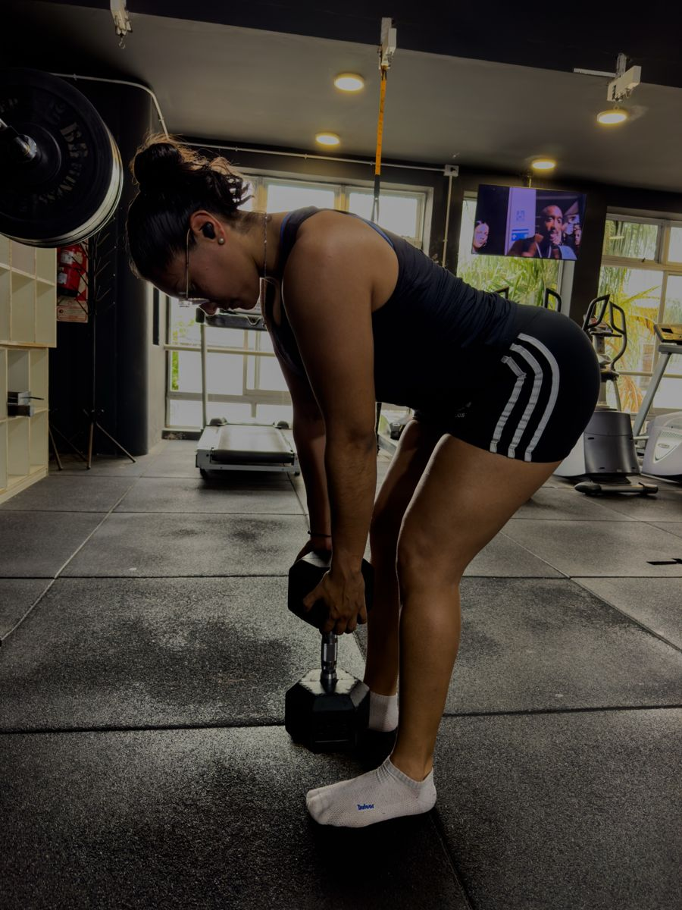
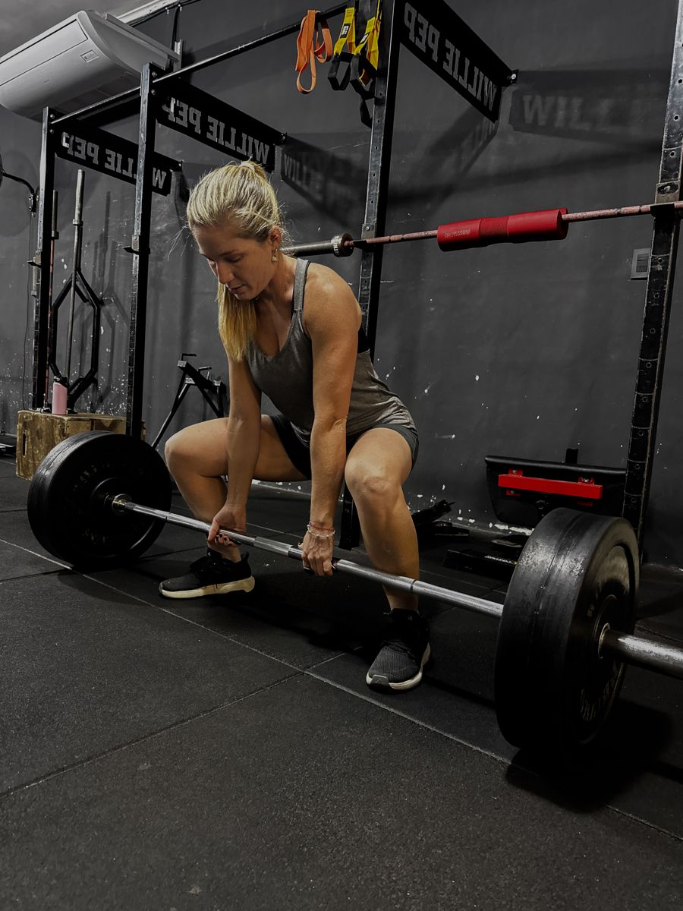

Peso muerto: cómo hacerlo bien
Es uno de los ejercicios más completos que existen y también uno de los que más dudas genera. Acá te explico qué es, qué trabaja y cómo hacerlo de forma segura.

¿Qué es el peso muerto?
Es levantar una carga desde el piso hasta quedar de pie, con el cuerpo erguido. Se llama "muerto" porque la barra arranca quieta en el piso, sin ningún impulso. Es un movimiento que hacemos todos los días: levantar una caja, una bolsa del súper o a un chico en brazos. Entrenarlo bien te hace más fuerte justamente en eso.
Técnicamente es una bisagra de cadera: la cadera va hacia atrás y hacia adelante mientras la espalda se mantiene firme. Aprender ese gesto es el primer paso[1].


¿Qué músculos trabaja?
- Isquiotibiales (parte de atrás del muslo): son los principales protagonistas. Como las rodillas se flexionan poco, ellos hacen gran parte del trabajo de extender la cadera[2].
- Glúteos: trabajan mucho, sobre todo al final, cuando terminás de pararte[2].
- Cuádriceps: ayudan al despegar la barra del piso.
- Espalda baja (erectores): trabajan para mantener la columna firme. En el peso muerto convencional la exigencia sobre esta zona es alta[1].
- Dorsales, trapecios, abdomen y antebrazos: mantienen la barra cerca, el tronco estable y el agarre firme.
Paso a paso (peso muerto convencional)
- Posición de pies. Pies más o menos al ancho de los hombros, con las puntas apenas hacia afuera. La barra sobre la mitad del pie[1].
- Bajá con la cadera. Pecho arriba y llevá la cadera hacia atrás, como si quisieras tocar la pared de atrás con la cola, dejando los brazos colgando[1].
- Agarre. Tomá la barra con las manos justo por fuera de las piernas y los brazos bien estirados. Las canillas tocan (o casi) la barra.
- Posición de la espalda. Alguien parado adelante tuyo tendría que poder leer lo que dice tu remera[1]. Espalda neutra, mirada unos metros adelante en el piso.
- Aire y abdomen. Tomá una buena bocanada de aire, apretá el abdomen y mantené el aire hasta pasar la parte más difícil del movimiento[2].
- Sacá la "holgura" de la barra. Antes de despegarla, tirá suave hasta sentir la barra tensa y el cuerpo firme. Así arranca sin tirón[1].
- Subí. Empujá el piso lejos tuyo. Cuando la barra pase las rodillas, llevá la cadera adelante hasta quedar derecho. La barra sube rozando las piernas.
- Terminá. Quedate alto y erguido, con los glúteos firmes y los brazos largos, sin encoger los hombros y sin tirarte hacia atrás[1].
- Bajá con control. Mismo movimiento al revés: primero la cadera atrás, y cuando la barra pasa las rodillas, flexioná las piernas hasta apoyarla.


Errores más comunes
Redondear la espalda con peso
Es el error más importante. Flexionar la columna con mucha carga es de lo peor para la espalda[4], porque aumenta las fuerzas de compresión y de cizalla sobre la zona lumbar[2]. Un leve redondeo con poco peso puede no ser un problema para algunas personas, pero con cargas altas hay que evitarlo[2]. Si pasa, bajá el peso.
Barra lejos del cuerpo
Cuanto más lejos va la barra, más palanca tiene sobre tu espalda baja. Tiene que subir y bajar rozando las piernas.
Tirar con los brazos o encoger los hombros
Los brazos son ganchos: sostienen la barra, no la levantan. Pensá en hacerlos lo más largos posible[1].
Hiperextender arriba
Tirarse hacia atrás al final es un error muy común[2]. No suma nada y carga la zona lumbar: terminá derecho, como cuando estás parado normalmente[1].
Ir siempre al límite
Llegar al fallo cansa mucho, cuesta recuperarse y suele hacer que se pierda la técnica, lo que puede terminar en lesión. Uno de los mejores levantadores de la historia dice haber logrado sus récords sin acercarse al fallo en el gimnasio[3].
¿Cómo empezar? Una progresión segura
No hace falta arrancar con la barra. Esta es una progresión que va de lo más simple a lo más exigente[1]:
- Peso muerto con kettlebell. La variante más fácil de aprender y la de menor riesgo. Ideal para grabar el gesto de bisagra de cadera.
- Con barra hexagonal. La carga queda a los costados, más cerca de tu centro de gravedad, y permite usar más peso de forma segura.
- Sumo. Piernas más abiertas y manos por dentro. Exige más movilidad de cadera pero menos de tobillo y de espalda alta.
- Convencional. El más técnico y el que más exige a la espalda baja.


Si todavía no tenés la movilidad para hacerlo desde el piso con buena posición, se puede elevar la barra (sobre discos o en un rack) y bajarla de a poco a medida que mejorás[1]. Otra buena alternativa es el peso muerto a una pierna, que carga mucho los isquiotibiales con menos carga sobre la espalda[4].
Preguntas frecuentes
¿El peso muerto es malo para la espalda?
No, si está bien hecho y con una carga adecuada. El problema aparece al redondear la espalda con mucho peso[4]. Por eso la progresión y la técnica son tan importantes. Si tenés dolor de espalda actual o una lesión previa, el convencional no es la mejor opción para empezar[1]: lo vemos juntos y, si hace falta, consultalo con un profesional de la salud.
¿Cuántas veces por semana lo hago?
Es probablemente el levantamiento más estresante, física y mentalmente. Muchos de los mejores levantadores de la historia lo entrenan pesado solo una vez por semana. Si lo hacés más seguido, que las otras sesiones sean livianas, de práctica técnica[3].
¿Dónde tengo que sentirlo?
Principalmente en la parte de atrás de las piernas y en los glúteos[2]. Si lo sentís sobre todo en la espalda baja, revisá la técnica y bajá el peso.
¿Uso cinturón?
No hace falta para empezar. Primero aprendé a tomar aire y a afirmar el abdomen por tu cuenta. El cinturón puede sumar más adelante, con cargas altas.
¿Te quedó alguna duda? Consultame en el próximo entrenamiento o escribime por el grupo.
Bibliografía
- Syatt, J. (s. f.). The Deadlift Bible: The World's Best Deadlift Manual for a Stronger, Safer, & Explosive Deadlift. Syatt Fitness.
- Contreras, B. y Cordoza, G. (2019). Glute Lab: The Art and Science of Strength and Physique Training. Victory Belt Publishing.
- Bolton, A. y Newman, E. (2013). The Black Book of Strength. Weider Publishing.
- Boyle, M. (2010). Advances in Functional Training: Training Techniques for Coaches, Personal Trainers and Athletes. On Target Publications.